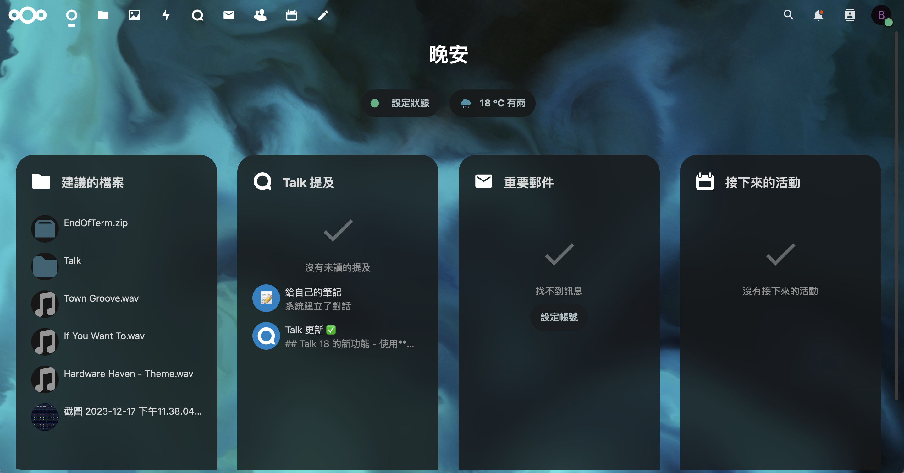

軟體調教
CIFS
CIFS檔案系統
CIFS 最初做為 Server Message Block (SMB) 檔案存取協定的延伸，由 Microsoft 於 20 世紀 90 年代中期發佈
利用TrueNas Scale開啟SMB Share功能並將部分空間（在此設定為路徑/mnt/proxshare）掛載於Debian虛擬機上，提供給Portainer（Docker）安裝容器並儲存資料
編輯Debian系統上的/etc/fstab來啟用自動掛載功能（如圖）
Nextcloud
Nextcloud 是一套用於建立網路硬碟服務的 Client-Server 架構的開源軟體，主要功能是建立及託管用戶的文件內容，具備企業等級的功能，官方也提供全面性的技術支援選項，作為自由、免費的開源軟體，任何人都可以在自己的私人網路主機上安裝並使用它完整的功能。
架設Nextcloud的過程中不停的遇到config.php無法寫入的問題。除此之外，第一次安裝完還需要調整多個設定曾能讓Nextcloud正常運行（尤其是cronjob）
終於，我成功為自己做了一個私人的雲端硬碟！Nextcloud甚至還有行事曆、聊天、照片等多項功能，實在好讚啊！
